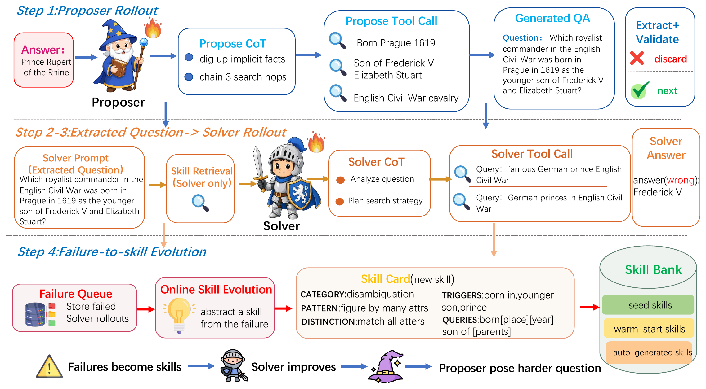

01研究背景与问题定义
搜索智能体的自博弈可以自己出题、自己求解，再用答案奖励更新策略。但一次失败通常只留下梯度，没有留下“下次遇到类似问题该怎样搜索”的显式经验。SESA 把这些经验维护成持续变化的技能库，并让它在训练过程中参与求解，使过去的失败同时影响下一次行动和未来练习的内容。
缺失的是课程与经验之间的回路
只把题目变难，智能体可能反复暴露相同弱点；只增加一个技能库，又可能始终在固定题目分布上积累经验。两者相连的关键不是让出题器直接读技能，而是让技能先改变求解器的成功率，再由成功率反馈改变出题奖励。记忆因此成为自博弈的训练状态，而不只是测试时附加的一段提示。
| 断点 | 为什么直接补救不够 | SESA 的介入 |
|---|---|---|
| 失败被消耗成一次更新 | 后续轮次不能显式检索失败的触发条件和纠错策略。 | 将有学习价值的失败提炼成可检索技能。 |
| 难题不等于可学习的题 | 一味奖励低成功率，会鼓励超出能力或质量不佳的问题。 | 奖励中间成功率，惩罚全对与全错的端点。 |
| 记忆增长可能积累噪声 | 原样保存所有失败会重复、误导，并拖累检索。 | 筛选、归纳、去重并依据后续表现淘汰非种子技能。 |
核心创新：技能既能留在外部，也能影响学到的策略
技能在生成训练轨迹之前就被检索出来，因而会影响搜索词、证据选择和答案。这些带技能条件的轨迹随后用于强化学习，收益可能保留在参数中；训练结束后，也可以继续检索最终技能库。论文由此提出两个不同问题：不带记忆部署是否仍有收益，以及带回同一技能库还能增加多少收益。二者不能混成一个“记忆有效”的结论。
这里的“零数据”有明确范围：训练不使用七个评测基准的问题，但会使用现成的目标答案与跳数种子池、人工种子技能，以及外部模型提炼经验。它研究的是无需目标评测题目的自生成训练，而非不依赖任何先验或辅助监督。
02方法与技术路线
SESA 同时维护出题策略、求解策略和外部技能库。前两者通过答案反馈更新参数，技能库则以较慢的节奏归纳失败、提交新版本。信息边界是：只有求解器能读取技能；出题器通过成功率间接感知它带来的能力变化。
Challenger · 出题
结合搜索生成问题 q 与目标答案 a*；参数独立，不读取技能库。
Solver · 带技能求解
从当前版本 Bₜ 检索 top-3；同题采样 5 条搜索轨迹，生成答案。
策略反馈
终局答案奖励 → 求解器 GRPO；中间难度奖励 → 出题器更新。
失败反馈
有信息量的前沿失败 → 待处理队列 → 外部模型归纳 → 相似度去重与效用维护。
论文原始训练框架 · 点击对照

Memory Priming 与非对称访问：先定义什么经验可以复用
技能不是历史答案的堆积。一个条目同时描述可复用策略、适用条件、应避免的混淆和查询模板，并维护检索、帮助与伤害次数。这种表示试图保留“为什么失败、什么情况下该换一种搜索方式”，使经验能够跨具体题目复用。
出题器结合搜索构造问题，原始框架图还包含问题抽取与有效性检查，未通过的候选被丢弃。Solver 读取问题求解，不直接拿到目标答案。初始 157 条技能既提供冷启动内容，也为后来归纳的粒度提供参照。训练时采用独立参数的 Challenger 与 Solver；后者按问题与技能的 E5-base-v2 嵌入相似度检索前三条，作为参考策略放到输入前部。检索在当前库版本下只读，不修改题目，也不是一次新的策略更新。
只让 Solver 读库，是为了让出题器通过真实的求解难度适应，而非直接围绕现成解题提示构造问题。这是论文的设计边界；主消融没有单独验证“出题器也读库”会造成多大损失，因此不应把信息隔离的必要性写成已经独立证明的事实。
Frontier Shaping：奖励“仍有分歧的任务”，而非越难越好
同题的多条求解轨迹给出经验成功率 p̂。若五条全对，任务对组内学习几乎没有区分力；若五条全错，任务也可能暂时无法产生可执行经验。SESA 因而用钟形奖励训练出题器，使它更愿意生成部分成功、部分失败的问题，而不是用 1−p̂ 一味追逐失败率。
主配置每题 5 条求解轨迹，非端点成功率为 0.2、0.4、0.6、0.8；0.4 与 0.6 得到最高的中间奖励。它改变的是出题策略的奖励，并非简单丢弃所有难题的硬过滤器。
Solver 仍接受最终答案奖励：先做归一化精确匹配，必要时做语义匹配，再以同题多条轨迹的相对结果构造 GRPO 优势。技能文本不直接成为监督答案，也没有单独的“把技能写进参数”损失；参数中的保留效果必须由训练后的实验判断。
Failure Distillation：从失败记录到下一版技能库
答案判错后，系统记录题目、目标、预测、检索证据和用过的技能。有信息量的前沿失败进入待处理队列，归纳时优先考虑重复失败，以及已经获得技能提示却仍未解决的失败。外部提炼模型要抽象出旧指导遗漏的触发条件、辨别证据和查询办法，而不是把错误答案换个说法存回去。
| 环节 | 实际操作 | 它没有保证什么 |
|---|---|---|
| 提炼候选 | 主实验由 DeepSeek-v4-pro 根据失败生成可复用经验。 | 模型归纳仍可能错误或过度概括。 |
| 语义去重 | 候选与库内条目、同次已接收条目的最大余弦相似度须 ≤0.93。 | 新颖性不等于正确性，近义也不等于重复适用条件。 |
| 维护效用 | 正确回答为检索到的条目记帮助；实质性错误记伤害，格式错误忽略。 | 同次检索的多个条目共同记账，没有隔离每条的因果作用。 |
| 保留与淘汰 | 保留人工种子；非种子被检索至少 3 次后，净帮助为负可被淘汰；库超 800 条时移除低分非种子。 | 计数驱动的保留仍受检索分布和任务难度影响。 |
归纳不是每个失败后同步阻塞训练。主配置每 10 步在队列足够时发起一次任务，最多选择 30 条失败，且至多有一个归纳任务在运行；完成后持久化并递增技能库版本，后续检索再读取。按步边界提交的意义是：不能用同一批失败刚生成的经验，回头解释这批轨迹是在该经验下采样的。训练采样与后续记忆更新需要有清楚的时间边界。
说明性示例：一次实体混淆如何变成搜索策略
依据论文技能结构构造，非原始运行日志。
失败记录
题目给出出生地、年份和亲属关系。求解器只凭其中一个线索选中同名人物，即使读到另一线索也没有交叉核对。
候选技能
触发：多属性实体辨别。策略：逐项核对所有限定条件；避免把父母、子女或同名对象当目标；查询模板保留地点、时间和关系三类限定。
以后检索到该条目，改变的是搜索与核验方式，不是直接提供这一题的答案。是否有效仍要看后续任务表现。
Dual-Path Reuse：部署时拆开参数与外部记忆
训练结束后，SESA-Off 使用训练得到的 Solver 参数与搜索工具，但不检索技能；SESA-On 使用完全相同的参数，再启用最终技能库。因此，Off 与 On 的差异能隔离这组权重下的测试时检索价值。Off 相比无技能自博弈 SSP 的差异，则反映整套技能条件训练留下的参数收益。
SESA-Off
问题＋搜索工具 → θₜ；不读取 Bₜ。
SESA-On
问题＋搜索工具＋检索技能 → 同一 θₜ。
这个拆分很有价值，但 Off 的提升不等于证明某条技能被逐字内化：技能可能通过改善轨迹质量、探索路径或课程分布间接改变训练。论文证明的是参数层面有保留收益，而非完成了逐条知识转移的机制追踪。
03实验设计与结果分析
主结果：技能闭环是否超出普通自博弈？
3,125 道留出题，七个数据集准确率等权平均；各方法使用相同搜索后端、单次贪心解码和最多 10 轮交互。下表选取三种骨干，完整系统为 SESA-On。
| 骨干 | 原模型 | SSP | SESA-On | 相对 SSP 的增量 |
|---|---|---|---|---|
| Qwen3-4B | 45.3 | 53.9 | 56.2 | +2.3 个百分点 |
| Qwen3-8B | 52.5 | 56.3 | 59.5 | +3.2 个百分点 |
| LLaMA-3.1-8B | 36.7 | 46.3 | 47.5 | +1.2 个百分点 |
Base→SSP 说明自生成搜索训练本身已有收益，SSP→SESA 才是技能闭环增加的部分。平均改善跨规模与模型家族存在，支持它能为已有自博弈增加效用；不能把相对原模型的全部提升都归给技能记忆。
改善也不逐项单调：Qwen3-8B 的 Bamboogle 从 SSP 的 67.2 降到 63.2，尽管平均分提高。平均值因此描述的是任务组合下的收益，不能替代对分解能力或每类搜索任务都改善的证明。
最有区分力的对照：收益究竟留在哪里？
| 骨干 | SSP | SESA-Off | SESA-On | 分解出的增量 |
|---|---|---|---|---|
| Qwen3-4B | 53.9 | 55.7 | 56.2 | 参数保留 +1.8；检索再加 +0.5 |
| Qwen3-8B | 56.3 | 58.5 | 59.5 | 参数保留 +2.2；检索再加 +1.0 |
这组对照比“有库优于无库”更能解释论文贡献：关闭检索后，SESA 仍保留大部分平均优势，说明技能路径改变了学到的策略，而不只是提供测试时额外提示。开启记忆的剩余增益较小，部署可以据此选择是否承担检索与上下文开销。
检索的价值还取决于任务。Qwen3-4B 的 2Wiki 在 Off 时为 53.6，On 时为 51.8，说明相关经验可能帮助某类题，也可能在另一类题中分散注意力。库的存在不是无条件收益，适用性判断仍是系统的一部分。
闭环的哪些部分有必要，额外资源在哪里？
| 条件 | 平均准确率 | 相对完整系统 |
|---|---|---|
| 完整 SESA | 56.2 | — |
| 去掉记忆预热 | 54.7 | −1.5 个百分点 |
| 去掉前沿塑形 | 54.0 | −2.2 个百分点 |
| 去掉失败提炼 | 53.5 | −2.7 个百分点 |
提炼失败的移除带来最大下降，支持持续更新记忆的重要性；仅有初始技能并不足以解释完整结果。前沿塑形的损失也说明，经验质量与题目分布不能完全分开。这些是组件的增量证据，尚不能把三项差值相加，或据此证明所有反馈边都具有独立因果作用。
资源方面，SESA 在普通自博弈之外增加了嵌入检索、失败归纳、技能维护及额外模型调用。论文给出训练硬件与配置，但没有在这些核心对照旁报告统一口径的全部训练计算和提炼账单。Off 部署可省去技能检索，却不会抵消训练阶段已经支付的成本；当前证据更充分地支持效用提高，而非总成本优势。
04贡献、局限与综合评价
核心贡献：把记忆从推理附件变成训练中的动态变量
| 层次 | 实质变化 | 证据边界 |
|---|---|---|
| 问题表述 | 课程与技能不再分别固定；失败经验能通过求解成功率改变后续课程。 | 给出了可运行的耦合路径，训练动态本身仍主要是相关性观察。 |
| 方法机制 | 前沿奖励、受控写回与有限技能库把经验选择接入自博弈。 | 重新训练消融支持这些组件有用，未独立验证每条中间机制。 |
| 评测设计 | 同权重 Off/On 拆分参数收益与外部检索收益。 | 能隔离部署检索的增量，不能追踪具体技能如何进入参数。 |
即使将来不用文本技能或 E5 检索，值得保留的仍是这条思路：让可检查的经验状态进入训练数据生成过程，再观察它如何改变课程，而不把经验维护限制在任务结束后的存档。论文最扎实的结论是这一组合提高了所测搜索任务的平均表现，并留下可在无记忆部署时保留的收益。
“技能被内化”仍存在更弱但同样合理的解释
SESA-Off 的提高说明训练过程改变了参数，却不能区分模型学到了具体策略、看到了更好的搜索轨迹，还是受益于更新后的题目分布。它们都与结果相容，但对后续系统设计意味着不同重点：前者强调技能表示，后两者可能更强调数据与课程。
有区分力的进一步验证，是固定生成题目和实际交互预算，分别使用有针对性的技能、打乱配对的技能和等长度普通提示，再比较 Off 部署的迁移。若定向技能仍更好，才能更有力地将收益归于程序性指导；否则应把贡献解释为一种有效的训练分布干预。
记忆维护筛掉的是低观测效用，不一定是错误知识
同一轨迹检索到的条目共同得到帮助或伤害计数，因而一个好技能可能被难题拖累，一个无用技能也可能搭便车。相似度门槛检查重复而不检查真实性；外部模型把单例失败提升为通用规则时，还可能把错误监督固化进库。
这些风险不意味着当前库无效，而是限定了“自我维护”的含义。可对候选技能保留独立的反例与适用条件测试，或固定问题、逐条移除技能测反事实效用，检验计数是否真能辨别有帮助的规则。仅观察库大小先增后减，无法代替这项验证。
自主性与资源优势需要按完整训练边界评价
出题过程没有使用目标基准问题，但初始化的人工经验、预热条目与外部提炼模型仍提供了结构和能力。若更换任务领域或提炼模型，这些前提可能改变。应把它理解为借助先验和辅助模型运行的自生成训练，而不外推为完全无人工知识的递归自我提升。
综合来看，SESA 最有学习价值的不是“多一个技能库”，而是让经验维护、策略学习和课程变化彼此相连，并通过 Off/On 对照拆开收益所在。当前结果支持搜索领域中的组合效用与参数保留；要进一步主张精确的技能内化、高可靠自我维护或全生命周期效率，还需要对训练分布、技能正确性和资源支出做更有区分力的控制。